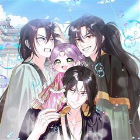

카카오웹툰 추천 인기 순위 TOP 30
카카오웹툰에서 지금 연재 중인 작품을 카카오웹툰 공식 인기 순위 순서로 모았어요. 네이버웹툰·카카오웹툰·레진코믹스에서 조건에 맞는 작품 944개 중 인기 순으로 30개를 골랐어요. 인기 TOP 3: 겨울성의 아기 죄수님, 너에게 빼앗을 왕관, 나는 한 편의 극을 보았다
2026-10-05 기준 · 성인 작품 제외
내 취향으로 더 좁혀서 추천받기 →-
1
 카카오웹툰
카카오웹툰겨울성의 아기 죄수님
나라는 패망하고, 왕족들이 모두 처형되던 날 밤. 당연히 자신도 죽을 것이라 생각했던 클라리스는 뜻밖의 말을 듣게 된다. "열여덟이 되지 않은 자를 사형에 처할 수는 없다. 대신 네가 열여덟이 되는 날, 나는 너를 죽일 것이다." 그렇게 클라리스에게 주어진 십 년이라는 시간. 클라리스…
힐링로판성장물카카오웹툰에서 보기 → -
2
 카카오웹툰
카카오웹툰너에게 빼앗을 왕관
내 평생을 바쳐 사랑한 사람. 그러나 사랑이라 믿었던 것은 배신이었고, 왕이었던 오라비는 나의 무지로 인해 죽었으며, 조국은 소리 없이 처참히 무너졌다. “다시… 돌아왔어.” 하지만 이번 생은 다를 것이다. 숙부에게 주어졌던 영광은 전부 빛을 잃을 것이며, 남편이 바랐던 찬란한 왕관은…
로판복수극카카오웹툰에서 보기 → -
3
 카카오웹툰
카카오웹툰나는 한 편의 극을 보았다
'심장은 여전히 그를 사랑한다고 말했지만, 머리는 그 사랑을 거부했다. 그것은 꽤나 묘한 기분이었다. 나지만 내가 아닌 느낌이었다.' 햇빛을 받아 금발처럼 보이는 금갈색 머리카락이 허리까지 내려와 굽실거렸다. 거울 안에는 반짝이는 짙은 녹색 눈동자를 가진 아이가 눈을 깜빡이고 있었다.…
로판시대물카카오웹툰에서 보기 → -
4
 카카오웹툰
카카오웹툰오무라이스 잼잼
'음식'과 '가족'의 이야기를 담은 에세이 만화. 몇 개라도 먹을 수 있을 것 같은 '메추리알 조림', 빙글빙글 돌아가는 '회전초밥', 지구 반 바퀴 돌아 포르투갈에서 맛본 '에그타르트', 매콤상콤하게 볶아 입맛 도는 '마라샹궈', 짭짤한 밥도둑 '간장게장' 등 우리가 사랑하는 모든…
공감음식&요리카카오웹툰에서 보기 → -
5
 카카오웹툰
카카오웹툰지옥사원
인간의 음식에 매료된 악마 쿼터, 사고로 흙수저 인간에게 빙의하다?! 능력을 모두 잃고 인간 <고순무>의 몸에 갇힌 악마는, ‘낮은 등급’ 인간의 삶이 지옥에서의 삶보다 질이 떨어지자 ‘높은 등급’ 인간이 되기로 결심한다. 한 편, 국내 최고의 대기업 <선호 그룹>에선 학력과 경력을…
오피스카카오웹툰에서 보기 → -
6
 카카오웹툰
카카오웹툰템빨
[신영우 (유저 네임: 그리드)] 세계 최고의 가상 현실 게임 <SATISFY>. 현실에서나, 게임 속에서나, 불운은 항상 그의 곁을 맴도는데.... 퀘스트 수행 중 우연히 발견한 게임 속 로또, '파그마의 기서'. 20억 명이 넘는 유저 중 유일한 최강의 레전드리 직업으로 전직. "…
사이다학원물게임판타지카카오웹툰에서 보기 → -
7
 카카오웹툰
카카오웹툰이번 생은 가주가 되겠습니다
“…한번 해 보자. 내가 가주가 되는 거야.” 제국에서 제일가는 가문, 롬바르디의 사생아로 환생한 피렌티아. 게다가 이 가문은 막대한 부는 물론 외교와 문화까지 통달한 말그대로 제국의 역사 자체! 금수저 오브 금수저 인생 당첨! 앞으로는 탄탄대로일 거라 생각했는데…. 아버지는 돌아가시…
사이다로판회귀카카오웹툰에서 보기 → -
8
 카카오웹툰
카카오웹툰SSS급 죽어야 사는 헌터
F급 말단 헌터 ‘김공자‘. 랭킹 1위 ‘염제‘를 부러워하던 어느 날, 무려 S+급 스킬을 얻는다. 하지만 기쁨도 잠시, 어째 스킬 내용이 이상하다?! 상대의 스킬 중 1개를 복사한다,까지는 좋은데… "뭐? 내가 죽어야만 발동된다고?!" 죽어야 사는 헌터의 인간찬가 <SSS급 죽어야…
눈물샘자극학원물회귀카카오웹툰에서 보기 → -
9
 카카오웹툰
카카오웹툰천하제일인의 소꿉친구
정파를 배신하고 천마 휘하의 마인이 되어 버린 구양천. 마인으로서 살아가며 천마의 명으로 본인의 의지와는 상관없이 수많은 악행을 저지르고 후회로 점철된 인생을 살아가게 된다. 천마가 일으킨 정마대전. 정파의 삼존 존재마저 무릎을 꿇린 천마를 베어낸 위설아로 인해 길고 길었던 지옥 같은…
액션하렘카카오웹툰에서 보기 → -
10
 카카오웹툰
카카오웹툰퀴퀴한 일기
내 주변에 반드시 한 명은 있을 것만 같은, 어쩌면 나 같기도 한 그녀의 일기. 어느덧 40대의 아기 엄마가 된 주인공 이보람과 그의 군단들의 이야기이다. 너무나 시시하고 쩨쩨해서 누구에게 털어놓기도 멋쩍은 일들이 작은 마음을 가진 그들에겐 늘 뜨겁고 강렬하다! 마음속 깊이 숨어있는…
공감개그카카오웹툰에서 보기 → -
11
 카카오웹툰
카카오웹툰그 쓰레기가 나였어요
역하렘 연애 육성 게임에 빙의했다. 온갖 악행을 저지르다 처단당하는 악녀, F-등급의 튤리아 프레지어로. “이렇게 끔찍한 스탯으로 살아남는 게 가능해?” “이 건방진 말투는 뭐야?!” 돈도 없고 운도 없고 모두에게 미움받으며, 아무도 날 사랑하지 않는다지만… 목숨을 부지하기 위해서 모…
사이다설렘폭발로판빙의카카오웹툰에서 보기 → -
12
 카카오웹툰
카카오웹툰화타가 된 외과의사
정의로운 성격 때문에 전문의는커녕 목숨까지 잃은 일반외과 전공 3년차 한진수. 천사인가, 악마인가, 아님 알 수 없는 시스템인가. 평소 쌓은 선행 덕분에 부활의 기회를 얻게 된다. 산적 떼에게 죽은 몸으로 부활하게 된 한진수. 그런데 이 몸이 전설의 명의名醫 화타?! 전란이 끊임없는…
눈물샘자극액션환생카카오웹툰에서 보기 → -
13
 카카오웹툰
카카오웹툰픽 미 업!
그 누구도 던전의 끝까지 오르지 못한 극악의 난이도를 자랑하는 모바일 가챠 게임 <픽 미 업!(Pick me up!)> 마스터 오브 마스터라 불리는 세계 랭킹 5위의 마스터 '로키'는 던전을 깨던 중 정신을 잃게 된다. 깨어나 보니 레벨도 1, 등급도 1성인 <픽 미 업!> 속 영웅…
사이다액션게임판타지카카오웹툰에서 보기 → -
14
 카카오웹툰
카카오웹툰너의 뜻대로
“네가 사라졌으면 좋겠다고 생각했어. 하지만 정말 그렇게 되리라고는 생각하지 못했어.” 우수한 성적과 뚜렷한 목표로 빛나는 삶을 살고 싶은 윤정. 욕심 없이 평범하고 소박한 삶을 바라던 언니 은아. 그리고 두 자매의 인생에 깊숙이 들어온 남자, 철윤. 오랜 기간 한마음으로 윤정의 곁을…
자극적인카카오웹툰에서 보기 → -
15
 카카오웹툰
카카오웹툰인어기담
내가 바뀌고 있다. 인어 고기는 불로불사의 영약이 아니었던 걸까? 고려 말, 전쟁을 피해 도망치던 한 귀족 소녀가 살기 위해 인어 고기를 먹는 순간 그 소녀의 쌍둥이 동생, 그녀가 새로이 정착한 마을 사람들, 그녀가 운명의 짝이라 믿게 된 한 남자의 운명이 파란만장의 소용돌이 속으로…
자극적인복수극카카오웹툰에서 보기 → -
16
 카카오웹툰
카카오웹툰창귀무쌍
평생 전장 만을 활보하며 살아온 늙은 노병 '추이'는 자신이 죽여 온 자들의 원념에 사로잡혀 죽음에 이른다. 추이가 다시 눈을 떴을 때, 이유는 알 수 없지만 아직 무공도 배우지 못하고 쟁자수로 일하던 어린 시절로 회귀해 있었다. 다시 돌아온 추이는 전생의 인연인 호예양을 떠올리며 호…
자극적인액션복수극카카오웹툰에서 보기 → -
17
 카카오웹툰
카카오웹툰무한의 마법사
마굿간에 버려져 평민으로 키워진 아이, 시로네. 타고난 통찰력으로 글까지 깨우친 아이는 도시로 나간 어느 날 그토록 궁금해하던 마법을 경험한다. 그 길로 마법사를 꿈꾸게 된 시로네. 하지만 신분의 장벽이 두터운 이 곳은 아이에게 냉혹하고, 그는 채 어른이 되기도 전에 이 세상의 이면을…
미스터리학원물성장물카카오웹툰에서 보기 → -
18
 카카오웹툰
카카오웹툰대사형 선유
삼류 낭인 곽노의 손에 거둬진 아이들. 사제관계를 맺고 아이들은 어설프게나마 무공과 보법 수련을 하며 각자의 꿈을 꾼다. 먹고살기 위해 곽노는 늘 자리를 비워야 했고, 아이들 중 맏이인 선유는 사제들을 돌봐야 한다. 그는 대사형大師兄이다.
눈물샘자극액션가족카카오웹툰에서 보기 → -
19
 카카오웹툰
카카오웹툰만렙 영웅님께서 귀환하신다!
힘없는 골방왕자 데이비, 혼수상태에서 영혼이 빠져나온 그가 도착한 곳은 영웅들의 혼이 모인 거대한 회랑. 천년동안 굴려진, 그가 만렙 영웅님이 되어 귀환하셨다! 기다려라, 모두 제대로 상대해주마! 데이비의 통쾌한 복수극과 왕궁생활기가 지금 시작됩니다!
사이다학원물회귀카카오웹툰에서 보기 → -
20
 카카오웹툰
카카오웹툰영웅, 회귀하다
인류 최강의 영웅, 김성인. 모든 것을 내던지며 분투했지만 결국…… 세상의 멸망은 막지 못했다 하지만 그의 전설은 이제 시작이었으니 성인, 20년 전으로 회귀하다! “이번에는…… 반드시 잡는다.” 압도적인 재능과 경험으로 무장한 완전체 영웅의 레이드는 아직 끝나지 않았다!
액션회귀카카오웹툰에서 보기 → -
21
 카카오웹툰
카카오웹툰아기는 악당을 키운다
세 번의 회귀. 4회차 인생. 운명의 아이로 선택되어 자랐으나 진짜 운명의 아이가 차원이동하여 나타나 그 아이를 위해 희생되는 삶이 반복된다. ‘이 나라는 노답이야. 망명하자.’ 망명 자금을 벌기 위해 입양되기를 택한 르블레인. 거기까진 좋았는데 입양된 곳이 하필이면 악당 가문이었다.…
로판육아물카카오웹툰에서 보기 → -
22
 카카오웹툰
카카오웹툰검술명가 막내아들
진 룬칸델 대륙 최고의 검술명가, 룬칸델의 막내아들 룬칸델 역사상 최악의 둔재 비참하게 쫓겨나 허무한 최후를 맞이한 그에게 다시 한 번 기회가 주어졌다. “너는 이 힘을 어떻게 사용하고 싶더냐?” “저를 위해 사용하고 싶습니다.” 전생의 기억과 압도적인 재능, 그리고 신과의 계약 최강…
액션회귀카카오웹툰에서 보기 → -
23

카카오웹툰시한부 아기 의원이 천재인 걸 안 숨김
인생 3회차, 제국 최고 의원이 되어 원래 세계로 돌아가기 직전… 황제에게 속아 목숨을 잃고 또 세 살로 리셋됐다. 더 이상의 회귀는 싫어! 지난 생에서 능력은 꽃피웠지만, 나를 지켜줄 사람이 없었다는 게 문제였다. 내 승부수는 최고의 무사였으나 불치병에 걸려 동편에 유폐된 숙부, 백…
힐링로판가족카카오웹툰에서 보기 → -
24
 카카오웹툰
카카오웹툰연하지옥
사랑도, 결혼도 '계산'이 되는 손해 보기 싫은 시대. 현대사회 매연 속을 살아가는 두 남녀에게 신선한 사랑이 찾아온다. 엘리트 코스를 밟아왔지만 결혼만큼은 계획대로 되지 않아 초조한 35세 커리어우먼 현다영. 누나 부부의 실패한 결혼생활이 나이 차이라고 생각하는, 의욕 없는 독신남…
설렘폭발로맨틱코미디카카오웹툰에서 보기 → -
25
 카카오웹툰
카카오웹툰잊혀진 들판
- 난 매일 기도해 이 사랑이 죽기를 오늘까지만 너를 사랑하고 내일은 이 사랑이 죽어 있기를 - 불륜으로 태어난 비운의 황녀, 탈리아 로엠 귀르타. 그녀는 무관심한 부모와 적대적인 이복형제들, 그리고 자신을 경멸하는 하인들 틈에서 일그러진 채 자란다. 다가오는 모든 이들에게 가시를 곤…
자극적인눈물샘자극로판카카오웹툰에서 보기 → -
26
 카카오웹툰
카카오웹툰권왕전생
인간들이 이종족을 노예로 부리는 세상. 대마도사 '레펜하르트'는 이종족들을 돕는다는 이유로 인간들에게 마왕 취급을 받는다. 마왕을 토벌하기 위해 온 용사 일행! '레펜하르트'는 그에 맞서 용사 일행에게 큰 피해를 주는 것에 성공하지만, 결국 권왕 '테스론'에게 죽임당할 위기에 처하는데…
학원물성장물카카오웹툰에서 보기 → -
27
 카카오웹툰
카카오웹툰점괘보는 공녀님
귀신 보는 능력을 가진 탑배우 이시아. 사고 후 '카밀라 소르펠'의 몸에서 눈을 뜬다. 문제는 말이지. "아, 아버지! 살려 주세요!" 이 여자의 끝이 매번 죽음이라는 것! 목숨줄 늘리는 게 우선이니, 일단 여기 터줏대감 귀신들과 대화부터 좀 해 볼까? 어라, 근데 왜 피하고 싶은 사…
미스터리로판환생카카오웹툰에서 보기 → -
28
 카카오웹툰
카카오웹툰만 년 만에 귀환한 플레이어
어느 날, 갑작스럽게 지옥으로 떨어졌다. 가진 것은 살고 싶다는 갈망과 포식의 권능 뿐. 일천의 지옥부터 구천의 지옥까지. 수만, 수십만의 악마를 잡아먹었고. 마침내 일곱 대공까지 그 앞에 무릎을 꿇었다. "어째서 돌아가려고 하십니까? 왕께서는 이미 지옥의 모든 것을 가지고 계시지 않…
액션게임판타지카카오웹툰에서 보기 → -
29
 카카오웹툰
카카오웹툰저승식당
“8, 8, 8, 82억이요?!” 흙수저 인생에 갑자기 찾아온 82억의 건물!! 그리고… 식당? 식당에 찾아오는 손님들의 행색은 수상하기 짝이 없고 알 수 없는 말만 하는데……. 서울 한복판에서 벌어지는 등골 서늘한 감동 스토리. 매일 밤 열한 시부터 한 시까지. 저승식당, 지금 영업…
힐링음식&요리옴니버스카카오웹툰에서 보기 → -
30
 카카오웹툰
카카오웹툰전속은 곤란합니다, 공작님
전생의 기억을 떠올린 지 5년 차. 하지만 아무 일도 일어나지 않았다. “원작 그게 뭐지. 먹는 건가.” 세계관은 몰라도 먹고 사는 데는 아무 지장없다. 돈도 잘 벌지 드래곤도 쪼물거릴 수 있지! 이대로 드래곤 훈련사로 가늘고 길게 살면 좋겠다! ...같은 생각을 했기 때문일까? “내…
성장물로판빙의카카오웹툰에서 보기 →